在 OKD4 上体验 StackRox
在 OKD 4.8 上部署并体验 StackRox (Red Hat Advanced Cluster Security for Kubernetes) 安全合规平台
简介
StackRox 是红帽收购的一个 K8S 安全合规平台，提供了丰富的 DevSecOps 功能:
- 镜像/容器漏洞扫描
- 配置最佳实践建议
- 风险分析
- 网络隔离/访问控制分析和管理
- 合规性检查和报表
- 威胁主动响应
该产品被重新命名为 Red Hat Advanced Cluster Security for Kubernetes. 红帽声称会将该项目开源出来，然而目前看来应该还没有完成. 希望能早日看到这个项目.
StackRox 目前支持的 K8S 平台包括 OCP 3.11, OCP 4.X, EKS, GKE, AKS. 而其支持的节点操作系统包括 Amazon Linux, CentOS, Container-Optimized OS from Google, RHCOS, Debian, RHEL, Ubuntu.
很明显 OKD4 及其底层的 Fedora CoreOS 并不在支持列表中, 这里仅仅是做一下可行性探索.
安装控制平面
先简单说一下 StackRox 的架构: 其控制平面组件包含 central + scanner, 需要运行在一个 K8S 管理集群中. 而受控集群上则需要运行集群级别组件 sensor + admission controller，和节点级别组件 collector.
这里使用 Helm Chart 的方式安装控制平面.
1 | helm repo add rhacs https://mirror.openshift.com/pub/rhacs/charts/ |
可以发现这里有两个 Charts：rhacs/central-services 和 rhacs/secured-cluster-services 分别对应了控制平面组件和受控集群组件.
先 helm show values rhacs/central-services 看一下默认参数. 根据自己的环境手工编写 values.yaml
1 | imagePullSecrets: |
执行安装
1 | helm install -n stackrox --create-namespace stackrox-central-services rhacs/central-services -f values.yaml |
输出会给出自动产生的管理员密码，route 信息，并提示保存自动产生的 values:
1 | oc -n stackrox get secret stackrox-generated-XXXXX -o go-template='{{ index .data "generated-values.yaml" }}' | base64 -d > generated-values.yaml |
到此为止，控制平面 Web 界面已经可以访问. 但是为了避免自签名证书带来的麻烦，先将其替换为 letsencrypt 证书.
替换控制平面证书
我的 OKD4 集群都使用 cert-manager 来请求并管理 letsencrypt 证书，并配置了名为 letsencrypt 的 cluster issuer
请求证书, 保存到一个名为 central-default-tls-cert 的 tls 类型 secret, 并重启 central pod 即可:
1 | oc delete secret central-default-tls-cert || true |
等 central pod 起来后就可以正常访问 web portal 了
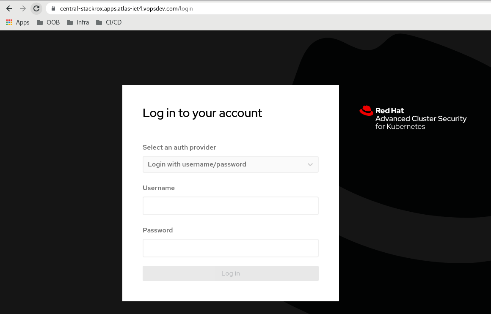
加入受控集群
登入控制平面 web portal 创建 init bundle 用于受控集群和控制平面之间的认证: Platform Configuration, Integrations, Authentication Tokens, Cluster Init Bundle
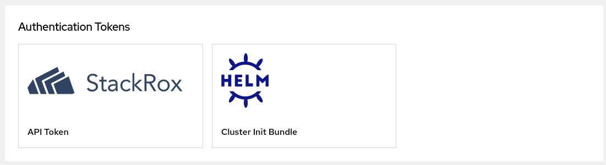
点击 Generate Bundle, 提供一个命名, 然后下载 Helm Values
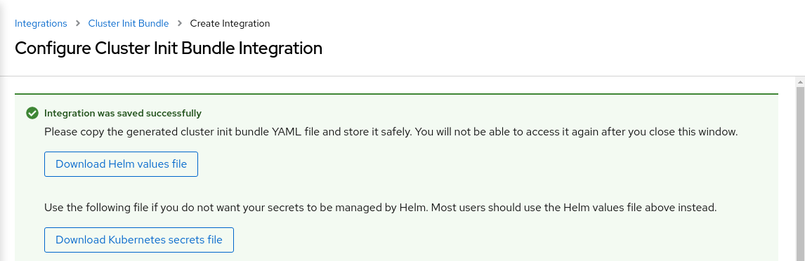
你的所有受控集群可以使用这同一个 init bundle. 然后就可以使用 helm 来安装受控集群的组件了
1 | ENDPOINT=central-stackrox.apps.atlas-iet4.vopsdev.com:443 |
collector 默认的收集方式是 KERNEL_MODULE. 然而 Fedore CoreOS 不在支持列表中, 因此 stackrox 并不提供对应的内核模块, 此时 collector pod 就会不停的崩溃. 为此可以将 collector.collectionMethod 设置为 EBPF 模式.
等各个组件都正常起来后, 就可以在 web portal 上看到受管理的集群了: Platform Configuration, Clusters
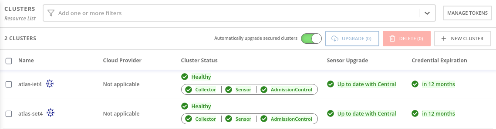
体验安全策略
StackRox 的核心在其安全策略，这里创建几个简单的安全策略来测试其静态检查和动态检查的能力.
静态漏洞检查
创建一个安全策略阻止含有 CVE-2021-27219 安全漏洞的镜像的部署: Platform Configuration, System Policies, +NEW POLICY
Policy Summary 部分如图设置
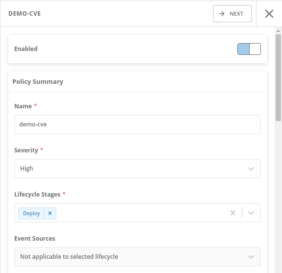
这里策略针对的生命周期阶段设置为 Deploy
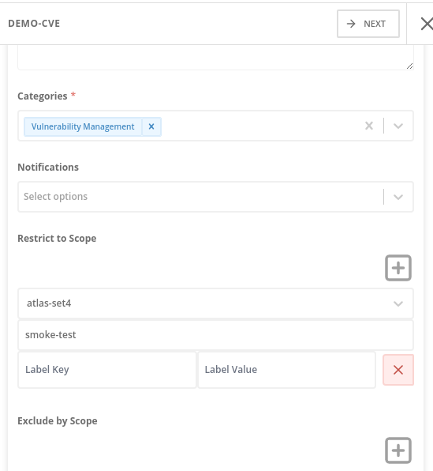
这里对策略的作用域进行限制: 该规则被限定到集群 atlas-set4 的项目 smoke-test 下.
Policy Criteria 部分: 把 Image Contents 下的 CVE 拉到左边的 Policy Section 1 下, 并指定其值为 CVE-2021-27219
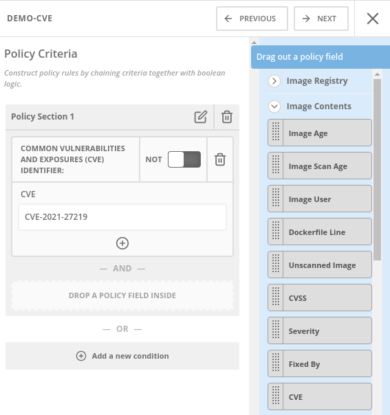
部署阶段的强制行为: 禁止不合规部署
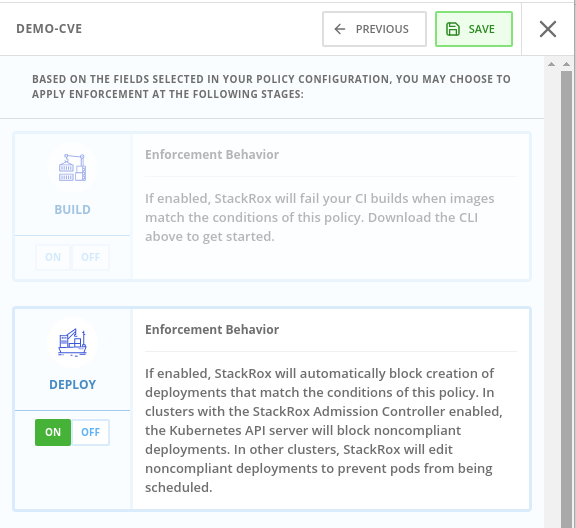
保存生效以后, 到 atlas-set4 集群的 smoke-test 命名空间下进行测试:
1 | oc project smoke-test |
Dockerhub 上的镜像 centos:7.9.2009 含有 CVE-2021-27219 漏洞. 此时可以发现副本数量被强制设置为 0
1 | NAME READY UP-TO-DATE AVAILABLE AGE |
运行时行为检查
禁止容器在运行时执行有风险/可疑的进程. 这里创建一个安全策略, 禁止容器使用 useradd, usermod, 和 adduser 命令
Policy Summary 部分如图设置
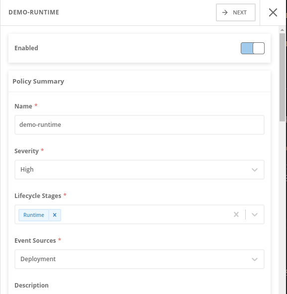
这里策略针对的生命周期阶段设置为 Runtime. Event Sources 设置为 Deployment.
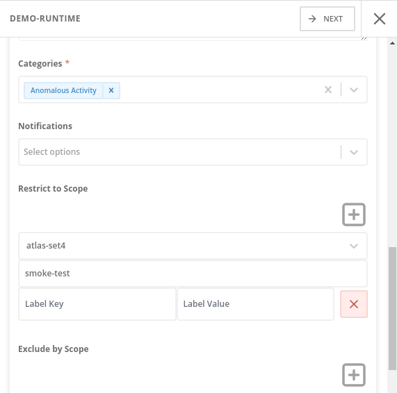
同样这里将该规则限定到集群 atlas-set4 的项目 smoke-test 下
Policy Criteria 部分: 把 Process Activity 下的 Process Name 拉到左边的 Policy Section 1 下, 并指定其值为 useradd|usermod|adduser
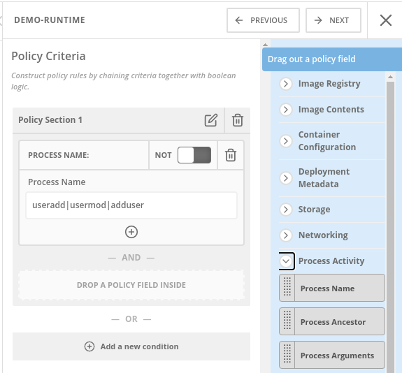
运行阶段强制行为: 杀死不合规的 pod
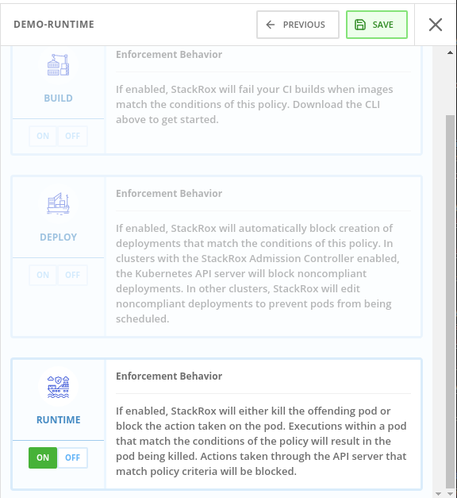
保存生效以后, 到 atlas-set4 集群的 smoke-test 命名空间下进行测试 1
2
3
4
5
6
7
8
9
10
11
12
13
14
15
16
17
18
19
20
21
22
23
24
25
26
27
28oc apply -f -<<EOF
apiVersion: apps/v1
kind: Deployment
metadata:
labels:
app: test-runtime
name: test-runtime
namespace: smoke-test
spec:
replicas: 1
selector:
matchLabels:
app: test-runtime
template:
metadata:
labels:
app: test-runtime
spec:
containers:
- image: docker.io/centos:7
name: test-runtime
command:
- /bin/bash
- -c
- sleep 60; useradd alice; while true; do sleep 10; done
EOF
oc get pod -l app=test-runtime -w
这个容器在启动之后的 60s 后会执行 useradd 命令，此时会因为违规而被杀死 1
2
3
4
5
6
7
8
9
10NAME READY STATUS RESTARTS AGE
test-runtime-556bd889d7-4vvsg 1/1 Running 0 7s
test-runtime-556bd889d7-4vvsg 1/1 Terminating 0 63s
test-runtime-556bd889d7-4vvsg 1/1 Terminating 0 63s
test-runtime-556bd889d7-rgjgq 0/1 Pending 0 0s
test-runtime-556bd889d7-rgjgq 0/1 Pending 0 0s
test-runtime-556bd889d7-rgjgq 0/1 Pending 0 0s
test-runtime-556bd889d7-rgjgq 0/1 ContainerCreating 0 0s
test-runtime-556bd889d7-rgjgq 0/1 ContainerCreating 0 2s
test-runtime-556bd889d7-rgjgq 1/1 Running 0 3s
在 web portal 的 Violations 处也可以看到这个违规的信息 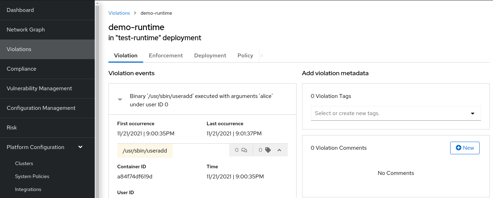